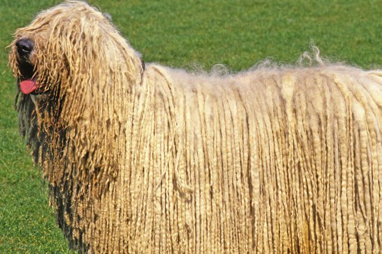
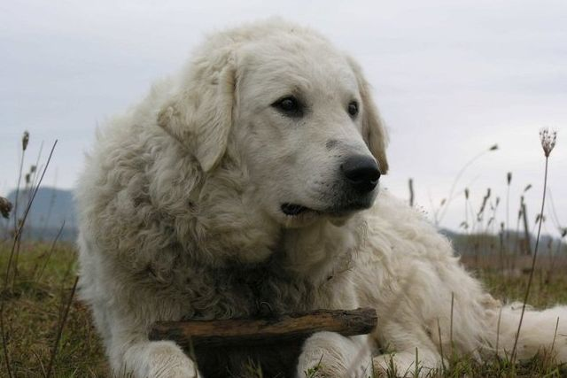
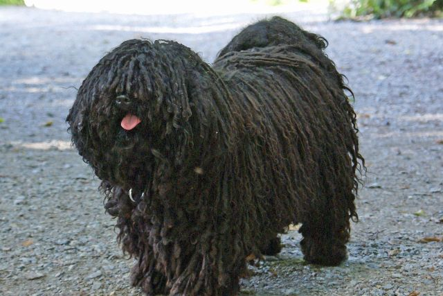
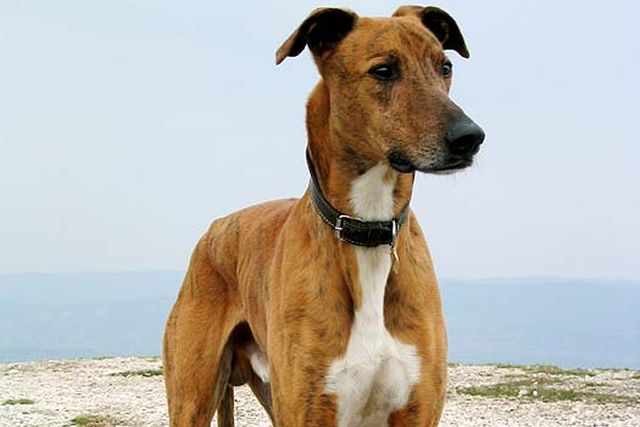

Magyar kutyák
Ha szigorúan értelmezzük az őshonos kifejezést, akkor csak azokat az állatokat soroljuk ide, amelyek a Kárpát-medencében éltek
a honfoglalás körüli időben, vagy a magyarokkal jöttek ide keletről a népvándorlás során. Ezeknek a fajtáknak a nagy része azonban már
régen kipusztult, vagy annyira megváltozott, hogy aligha nevezhető ugyanannak a fajtának.
Ezeknek a fajtáknak a nagy része azonban már régen kipusztult, vagy annyira megváltozott, hogy aligha nevezhető ugyanannak a fajtának.
Leggyakoríbb magyar kutyafaták

Komondor
A komondor az egyik legismertebb magyar pásztorkutyafajta, amelyet mai formájában a legrégebben tenyésztettek ki. Nevének több magyarázata is van. Valószínűleg a kuman (kun) szóból származik, 1454-ben bukkant fel nyelvemlékeinkben, a Debreceni kódex 1519-ben már kutyanévként említi a kamondort vagy komondort.

Kuvasz
A kuvasz a magyar kutyafajták közül az egyik legrégebbi nyájőrző kutya, talán ősibb, mint a komondor. A pásztorkodás megszűntével a tanyák és vidéki kúriák nyájőrzőkutyája lett. A kuvasz őrző-védő pásztorkutya, de hajdan vadászkutyaként medve-, bölény-, és őstulokvadászatnál alkalmazták, ma gazdaságok és házak őrzésére használják.
Magyar vizsla
Régi magyar vadászkutya, amely több fajta keresztezéséből alakult ki. Már honfoglaló őseink mellett, akik szenvedélyes vadászok voltak, feltűnt egy vadászkutya, amely követte őket a vándorlások során a Kárpát-medencébe.

Puli
Ősei a pásztoremberek nélkülözhetetlen segítői voltak. Akár egy marhát is adtak egy-egy híres terelő kölykéért. A külsejével nem törődtek. A puli fennmaradása a szorgalmának, találékonyságának, intelligenciájának tudható be.

Magyar agár
A magyar agár a legkevésbé ismert magyar kutyafajta, amely nem egyszer a kihalás szélén állt. Nem azonos a történelmi magyar agárral. Rendkívűl jó futó, ezért kapta „a nyílsebes főnemes” titulust.